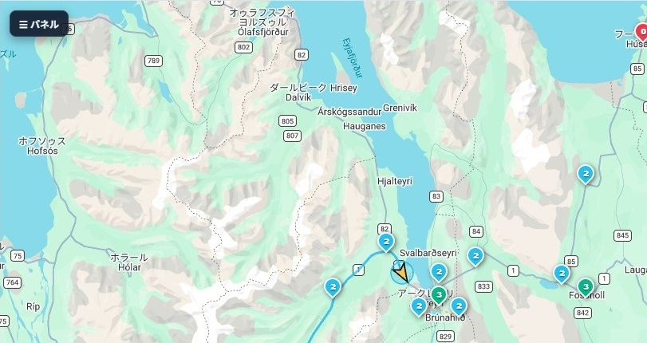
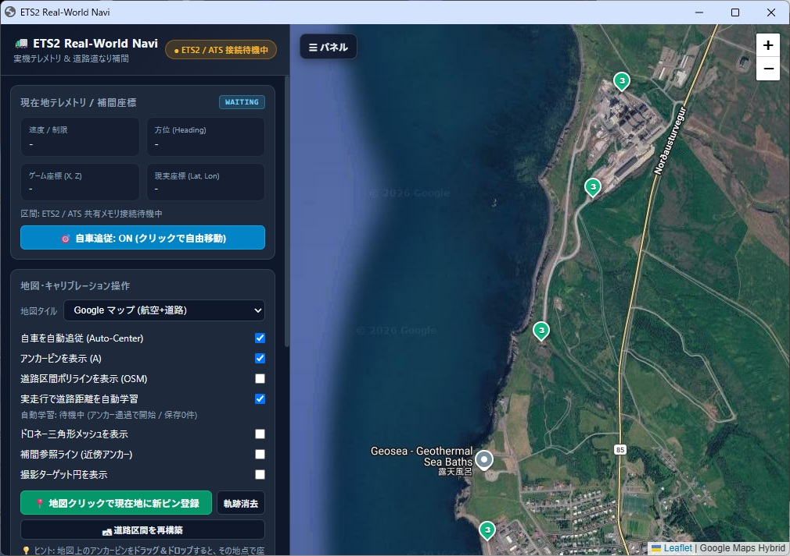

作り込みのしっかりしたドライビングシムだからこそ、「リアルだと今どのあたりを走っているのか」を Google マップにリアルタイム表示したくなった——そんな思いつきから始まった開発の記録です。
Euro Truck Simulator 2（ETS2） や American Truck Simulator（ATS） は、街並みや道路標識、ランドマークまで非常に丁寧に作り込まれているドライビングシミュレーターです。
ゲーム内の道路を走りながら、ふと「これだけ作り込みがしっかりしたゲームなら、リアル（現実世界）だと今どのあたりを走っているのかをリアルタイムで Google マップに表示できたら面白いのでは？」と思い立ったのが、この 「ETS2toGoogleMAP」 プロジェクトの始まりでした。

最初はまず「そもそも技術的に可能なのか？」を確かめるため、Gemini に次のような質問を投げかけたところからスタートしました。
「ETS2 ATS のゲーム画面をキャプチャして看板などを読み、それをgemma4などで解析しどの当たりかを大まかな位置を推測、現実の地図ならだいたいこの辺という緯度経度をgoogleMAPに渡しピンを立てる
これは現実でもGPSがないときに利用出来るかもしれない技術かと思いますが、可能でしょうか？」
この問いかけをきっかけに、現実の地図とゲーム内座標をどう結びつけるか、必要なデータや処理の流れをどう組むべきか、Gemini と何度も対話を重ねながら構想を具体化していきました。
対話を繰り返す中で、すべての処理を1つのプログラムに詰め込むのではなく、役割ごとに3つのプロセスへ明確に分離する設計に落ち着きました。
解析やデータベース構築は開発側・データ作成側で行い、最終的には「③ 表示プロセス」を一般ユーザー向けに配布できる形にすることを目標に据えました。
いきなり広大な ETS2・ATS の全マップを対象にするのではなく、まずは小規模でまとまりのあるエリアで試作（プロトタイプ）を作ることにしました。
そこで試作ターゲットとして選んだのが、最新の アイスランド DLC です。島国で境界がはっきりしており、検証用マップとして最適だと判断し、3つのプロセスそれぞれのコードを Antigravity を使って書き始めました。
開発を進めていく中で、最も難易度が高い壁として立ちはだかったのが「ゲーム内マップの縮尺が一定ではない」という点です。
この縮尺変動をどう吸収し、どの地点を走っていても現実の道路や位置に違和感なくマッピングできるかが、本プロジェクトにおける最大の技術的チャレンジとなっています。
第1プロセスの「データキャプチャ」では、走行中の画面を無闇に連写してストレージや解析コストを圧迫しないよう、走行状況に応じた3つの実行トリガーと空間リングバッファを組み合わせた収集エンジンを実装しています。
capture_targets に登録された地点に対し、前方距離と横ズレ（最大 45m）を計算。遠方（55〜90m）・中距離（28〜55m）・近距離（8〜28m）の3段階で自動撮影し、看板の視認性を確保します。SignDetector が画面内の看板を検知し、スコアが閾値を超えた場合に撮影します。連続撮影を防ぐため、街中 20m / 郊外 50m のクールダウン制御を備えています。SpatialRingBuffer による遅延補完：直近 550m の走行フレームを 15m 刻みで保持しており、撮影タイミングとフレーム取得がわずかにズレた場合でも直近フレームから取りこぼしなく補完します。capture_queue へ登録します。第2プロセスの「解析・データベース作成」では、ローカル環境で完結する高速かつ低コストなパイプラインにより、キャプチャ画像から精度の高いアンカーポイント（ゲーム内座標と現実の緯度・経度の対応点）を構築しています。
EventBundle）」に統合し、重複解析を防ぎます。PaddleOCR で抽出した文字列を、LM Studio 上のローカル LLM（Gemma 4）へ渡します。city_limit）や OSM 空間データと照合して現実の緯度・経度を特定します。confidence）と重なり回避：DB 登録時は既存アンカーとの距離や信頼度を比較し、手動登録や高信頼アンカーを保護しつつ、より高精度な結果が得られた場合のみ「昇格更新」を行います。また、近接時の座標重なりを回避する微調整（デコンフリクト）を施して登録します。最終的な配布対象となる「表示プロセス」では、ゲーム内の現在位置を低遅延で取得し、前述の縮尺変動を吸収して現実の緯度・経度へ変換するための仕組みを組み込んでいます。

game_x, game_z）や進行方向（heading）を低負荷でリアルタイム取得します。SQLite データベースに格納した「アンカー点群」「アンカー間道路区間（ゲーム内道路 .scs と現実の OpenStreetMap 道路を突合して構築）」「都市エリア境界」を参照し、現在地の状況に応じて以下の優先順位で現実の緯度・経度を算出します。
理想通りに一発で動くわけではなく、実際のゲーム内データと現実の地図データを突き合わせながら、何度も改修とトライ＆エラーを繰り返してきました。
その積み重ねの結果、現在ではアイスランドのマップの約8割程度にアンカーを打つところまで進み、リアルタイム表示の基盤が形になってきています。
ここからは、まず表示系の精度や使い勝手をさらに洗練させ、アイスランドマップでの完成を確認することを最優先に進めていきます。
そしてアイスランドでの完成が見え次第、次のステップとして ETS2・ATS の全マップへの対応 を目指します。全マップ規模になると個人の手作業だけではカバーしきれないため、協力者の募集 や 大量のデータ解析をどのように効率化して進めるかのプランニング へ移行していく予定です。